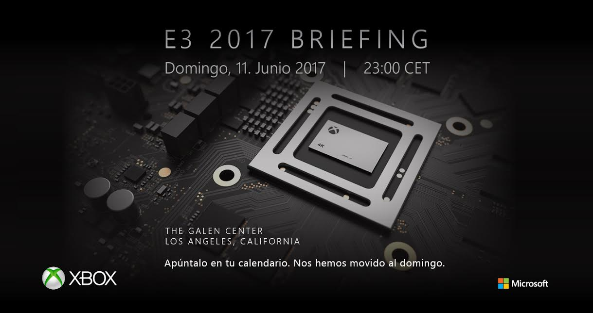

Phil Spencer, el principal responsable de la división Xbox, ha asegurado que en Microsoft tienen un catálogo de exclusivos
muy importante previsto para este 2017. No sólo para seguir alimentando la oferta de software de Xbox One, sino para comenzar a labrar el
de un Project Scorpio que se pondrá en marcha también a finales de este año.
"Estamos centrados en construir el mayor catálogo de la historia de Xbox, lo que significa que nuestro catálogo de retrocompatibles
también continuará creciendo a lo largo de este año", declaró el propio Spencer.
"Con una variedad tan amplia de oferta de juegos en y de exclusivas first-party en el horizonte, así como las continuadas mejoras
en Xbox Live y el lanzamiento inminente de Project Scorpio en 2017, va a ser un año increíble para los jugadores de Xbox One y Windows 10",
continuó.
El ejecutivo asegura que para este año tendrán un catálogo de exclusivos "mayor y más diferenciado" que el año pasado, algo que ya te
adelantábamos hace unos días, y prometió que los usuarios de la marca Xbox pueden esperar más presentaciones de juegos de cara al E3 2017
que se celebrará en junio de este año.
Microsoft pone fecha y hora a su conferencia en el E3 2017
Ya podemos ir reservando hora para la que será (salvo sorpresa en los horarios) la primera gran cita del próximo E3 2017.
Microsoft ha confirmado fecha y hora para su conferencia de prensa: domingo 11 de junio a las 23:00, hora española. La invitación está
ilustrada con la única imagen conocida hasta la fecha del procesador de Project Scorpio, dejando claras las intenciones de la firma
americana para su evento.
¿Habrá noticias del nuevo Halo o el futuro Forza Motorsport? ¿Qué más pueden presentar en Los Ángeles? Es un auténtico misterio a
día de hoy, pero no han sido pocas las veces que el mandamás de la división Xbox, Phil Spencer, se ha mostrado optimista con el
evento del próximo junio. El E3 2017 abrirá sus puertas dos días después: se celebrará del 13 al 15 de junio en el Convention Center
de Los Ángeles.

Dead Rising 4 celebra un sangriento San Valentín en One y Windows 10
Willamette necesita héroes... y amor. ¿Por qué no matar dos pájaros de un tiro? Dead Rising 4 se ha actualizado hoy mismo, 14 de febrero,
con nuevos añadidos que te ayudarán a contagiar la ciudad infestada de muertos vivientes con el espíritu de San Valentín... o al menos un
poquito.
Capcom Vancouver estrena un traje de Cupido para Frank West, cascos de Servbot con corazones, y dos trajes para zombies: uno de rosa
y otro de hombre de chocolate. Microsoft ha aprovechado la ocasión para lanzar un romántico tráiler. Dead Rising 4 llegó a Xbox One y
Windows 10 el pasado mes de diciembre.
Cities: Skylines se estrena en Xbox One en primavera
Paradox Interactive ha concretado el estreno de Cities: Skylines para primavera en Xbox One. La edición contará con una optimización
en el control por parte de Tantalus para garantizar la mejor gestión desde el mando de la consola de Microsoft. Aunque no han concretado
fecha de estreno, la firma ha confirmado que la edición de Xbox One incluirá la expansión After Dark.
Mediante nota de prensa, el CEO de Paradox Interactive, Fredrik Wester, ha concretado que “Paradox es una compañía que se muestra
orgullosa de publicar y dar apoyo a los juegos considerados de nicho, y estamos contentos de poder traer también a consolas esas
experiencias de juego más específicas”. El software original se estrenó en PC, Mac y Linux con gran éxito en el año 2015.
Según Wester, la comunidad de Cities: Skylines es “una de las más activas que hemos visto entre los seguidores de Paradox”.